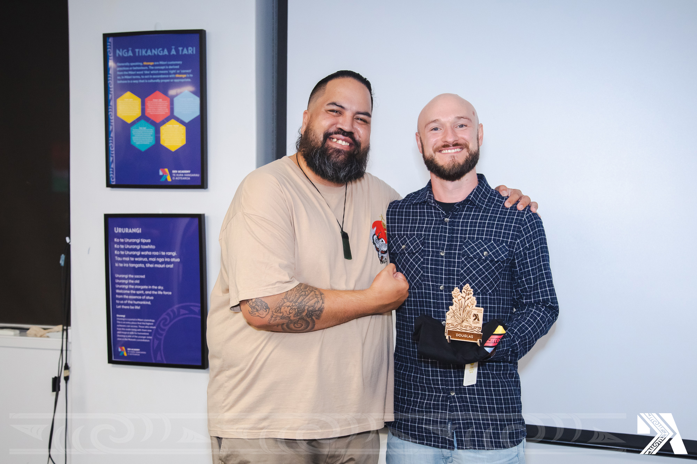
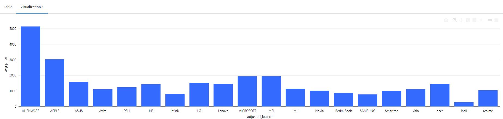
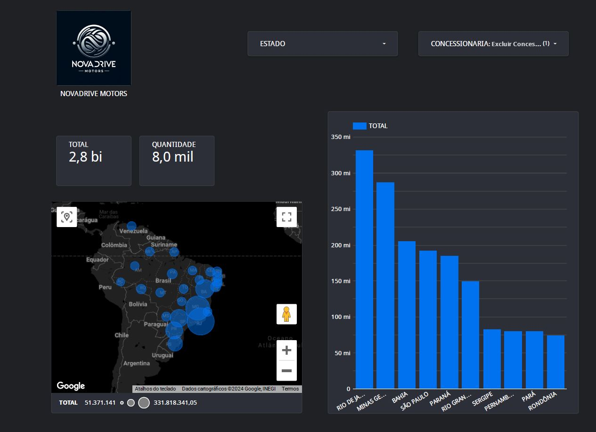
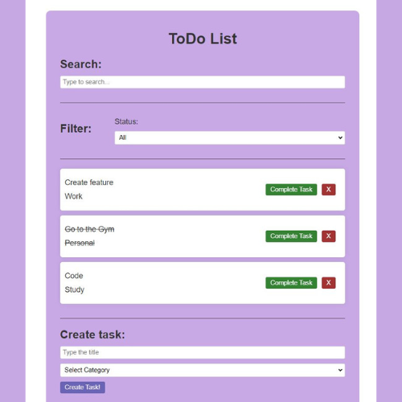
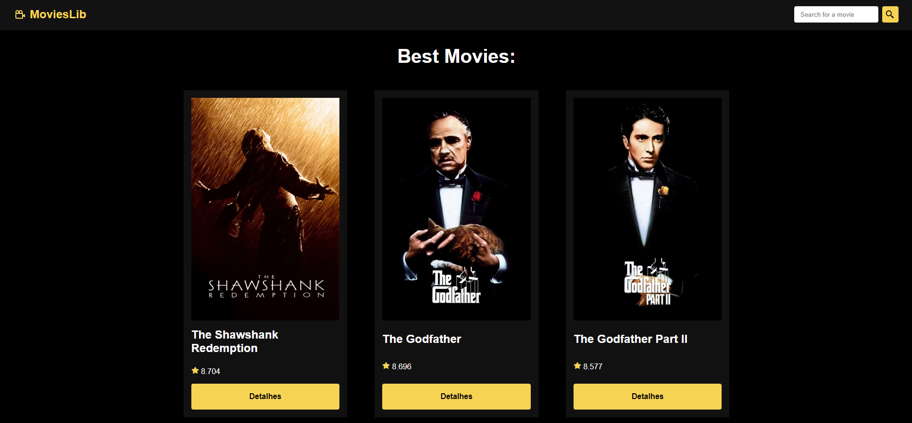

I'm Douglas Post, a recent graduate from a tech program in Auckland, known as Dev Academy Aotearoa. At Dev Academy, I acquired skills in building fullstack software applications in an Agile environment.
My professional journey includes 5 years as a support analyst in Brazil, where I assisted ERP users, followed by 6 months as a help desk technician in Auckland, gaining valuable local IT experience.
I'm now transitioning into the Data Analysis and Engineering world. Using tech skills to explore data, manage it, manipulate it and finally, extracting insights from data, is something that I am fascinated about.
Upon arriving in New Zealand 6 years ago on a working holiday visa, I had the opportunity to work and travel across the country. After that great experience, my partner and I decided to settle here and make Aotearoa our new home. To secure residency, I embarked on a career in construction and also took this period to improve my language skills. This journey included managing small teams, which taught me the importance of teamwork and effective communication.
In my free time, I enjoy playing football, staying active with workouts, and exploring nature through hiking and cycling. I also have a passion for cooking, particularly barbecue.
Let's connect and explore how I can contribute to your team!
Below are some Data Analysis projects that I've worked on. Feel free to explore their descriptions and README files for more details about each one.
Explore the fascinating correlation between physical activity and sports performance with my Football Performance Analysis project. Leveraging real data from my daily step counts recorded in JSON format and detailed match statistics stored in a CSV file, this project delves into how my weekly step activity influences my football game outcomes.
Correlation Analysis:
1 - Is there a relationship between the weekly steps total and the week's football performance? If so, how strong is it?
I found a strong positive correlation between weekly steps and metrics like goals scored and team wins.
2 - Is there a relationship between the total steps on the football day and the football performance? If so, how strong is it?
There is a moderate to strong positive correlation between steps on football days and metrics like goals scored, assists, and team wins.
3 - Which has a stronger correlation to my football performance: total steps on football days or total steps per week?
Total steps per week generally showed stronger correlations with metrics like goals scored and team wins. However, for assists, total steps on football days exhibited a stronger correlation.
Using Python, I conducted a correlation analysis to uncover meaningful insights. By merging and analyzing these datasets, I unveiled compelling connections between my physical activity levels and key game metrics such as goals scored, assists made, and team victories. This project showcases my skills in data integration, manipulation, and analysis, highlighting my ability to derive actionable insights from diverse data sources.
Click here to check it out on my github profile:
In this project, I used the Databricks environment to explored the factors that influence laptop computer prices using a dataset from Kaggle. I analyzed various attributes such as brand, memory type, and processor speed to understand their impact on pricing.
This analysis highlights how brand reputation and technology advancements impact laptop pricing. The unexpected higher cost of DDR3 RAM laptops underscores the influence of brand value in the tech market.

Below are some Data Engineering projects that I've worked on. Feel free to explore their descriptions and README files for more details about each one.
NovaDrive Motors is a project focused on enhancing how sales data is managed and analyzed. Using tools like PostgreSQL for exploring data and Snowflake for storing it securely, the project integrates Apache Airflow for automating data workflows and dbt for transforming data efficiently.
This project highlights my skills in data engineering, SQL, and cloud technologies like AWS, demonstrating my ability to build effective data solutions for business insights.

Below are some projects that I've worked on. Feel free to explore their descriptions and README files for more details about each one.
A simple todo list application that allows users to add, delete, and mark tasks as completed.
I made this project in the second week of the bootcamp, after learning about React, because I felt that I needed to improve my abilities in React. So this is my very first project. I wanted to do something simple and be able to finish it in the same weekend, as the next week I would learn something else.

This project, named 'MoviesLib,' originated during the third week of the Dev Academy boot camp. After the boot camp concluded, I seized the opportunity to further develop it, adding additional styling and features to refine it into a showcase piece for my portfolio.
MoviesLib is a project that allowed me to hone my front-end skills while practicing API consumption. Specifically, it interfaces with the TMDB (The Movie Database) API to fetch movie data dynamically. Through this project, I aimed to reinforce my understanding of API integration and enhance my proficiency in front-end development.
I invite you to explore MoviesLib and experience the culmination of my efforts in this endeavor.
